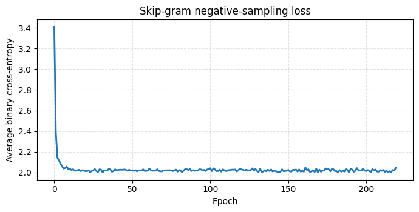
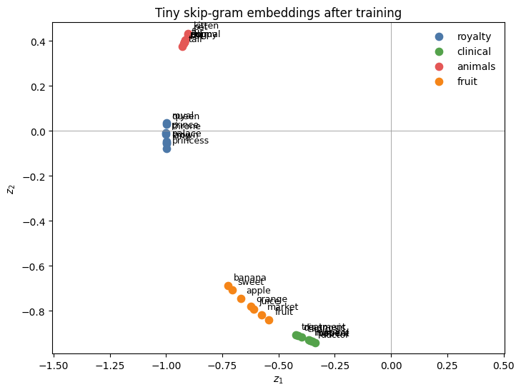
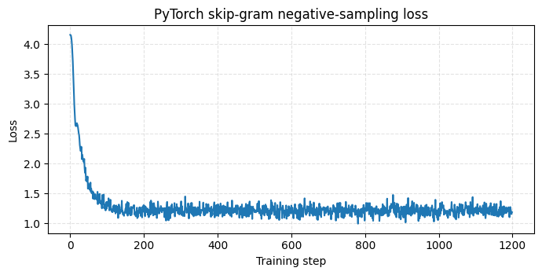

%pip install numpy matplotlib torchWord2Vec from scratch
This notebook trains a very small skip-gram model with negative sampling. The goal is to see how word embeddings arise from a feedforward computation made of lookup vectors, dot products, sigmoid activations, and binary cross-entropy.
Requirements
from pathlib import Path
import re
import numpy as np
import matplotlib.pyplot as plt
rng = np.random.default_rng(7)
FIG_DIR = Path('figs/figs-embeddings')
FIG_DIR.mkdir(parents=True, exist_ok=True)
def tokenize(text):
return re.findall(r'[a-z]+', text.lower())
corpus = [
'king queen prince princess royal throne crown palace',
'queen king princess prince royal crown palace throne',
'doctor nurse patient hospital clinic diagnosis treatment',
'patient doctor nurse clinic hospital treatment diagnosis',
'cat dog puppy kitten animal pet fur',
'dog cat kitten puppy pet animal tail',
'apple orange banana fruit sweet market',
'banana apple orange fruit sweet juice',
] * 16
sentences = [tokenize(s) for s in corpus]
vocab = sorted({w for sent in sentences for w in sent})
word_to_id = {w: i for i, w in enumerate(vocab)}
id_to_word = {i: w for w, i in word_to_id.items()}
V = len(vocab)
print(f'Vocabulary size: {V}')
print(vocab)Vocabulary size: 30
['animal', 'apple', 'banana', 'cat', 'clinic', 'crown', 'diagnosis', 'doctor', 'dog', 'fruit', 'fur', 'hospital', 'juice', 'king', 'kitten', 'market', 'nurse', 'orange', 'palace', 'patient', 'pet', 'prince', 'princess', 'puppy', 'queen', 'royal', 'sweet', 'tail', 'throne', 'treatment']Build skip-gram pairs
For each center word, all words inside a context window become positive training pairs.
window = 2
pairs = []
for sent in sentences:
ids = [word_to_id[w] for w in sent]
for center_pos, center in enumerate(ids):
lo = max(0, center_pos - window)
hi = min(len(ids), center_pos + window + 1)
for pos in range(lo, hi):
if pos != center_pos:
pairs.append((center, ids[pos]))
print(f'Number of positive pairs: {len(pairs)}')
for center, context in pairs[:10]:
print(f'{id_to_word[center]:>10s} -> {id_to_word[context]}')Number of positive pairs: 2816
king -> queen
king -> prince
queen -> king
queen -> prince
queen -> princess
prince -> king
prince -> queen
prince -> princess
prince -> royal
princess -> queenTrain skip-gram with negative sampling
For an observed pair \((w,c)\) we maximize \(\sigma(v_w^\top u_c)\). For randomly sampled negative contexts \(n_k\), we maximize \(\sigma(-v_w^\top u_{n_k})\).
counts = np.ones(V)
for sent in sentences:
for w in sent:
counts[word_to_id[w]] += 1
neg_probs = counts ** 0.75
neg_probs = neg_probs / neg_probs.sum()
d = 2
W_in = rng.normal(0, 0.15, size=(V, d))
W_out = rng.normal(0, 0.15, size=(V, d))
def sigmoid(x):
return 1 / (1 + np.exp(-np.clip(x, -20, 20)))
def train_sgns(epochs=220, lr=0.045, k=5):
losses = []
for epoch in range(epochs):
rng.shuffle(pairs)
total = 0.0
for center, context in pairs:
targets = [context]
labels = [1.0]
negatives = rng.choice(V, size=k, replace=True, p=neg_probs)
targets.extend(negatives)
labels.extend([0.0] * k)
v = W_in[center].copy()
grad_center = np.zeros(d)
for target, label in zip(targets, labels):
u = W_out[target].copy()
score = sigmoid(v @ u)
error = score - label
grad_center += error * u
W_out[target] -= lr * error * v
total += -(label * np.log(score + 1e-9) + (1 - label) * np.log(1 - score + 1e-9))
W_in[center] -= lr * grad_center
losses.append(total / len(pairs))
return np.array(losses)
losses = train_sgns()
emb = W_in / np.linalg.norm(W_in, axis=1, keepdims=True)
plt.figure(figsize=(7, 3.6))
plt.plot(losses, linewidth=2)
plt.title('Skip-gram negative-sampling loss')
plt.xlabel('Epoch')
plt.ylabel('Average binary cross-entropy')
plt.grid(True, linestyle='--', alpha=0.35)
plt.tight_layout()
plt.savefig(FIG_DIR / 'notebook_word2vec_loss.png', dpi=300)
plt.show()
Inspect the learned embedding space
Because we trained directly in two dimensions, no PCA or t-SNE is needed for visualization.
groups = {
'royalty': ['king', 'queen', 'prince', 'princess', 'royal', 'crown', 'palace', 'throne'],
'clinical': ['doctor', 'nurse', 'patient', 'hospital', 'clinic', 'diagnosis', 'treatment'],
'animals': ['cat', 'dog', 'puppy', 'kitten', 'animal', 'pet', 'fur', 'tail'],
'fruit': ['apple', 'orange', 'banana', 'fruit', 'sweet', 'market', 'juice'],
}
palette = {'royalty': '#4C78A8', 'clinical': '#54A24B', 'animals': '#E45756', 'fruit': '#F58518'}
plt.figure(figsize=(7.4, 5.6))
for group, words in groups.items():
xy = np.array([emb[word_to_id[w]] for w in words if w in word_to_id])
plt.scatter(xy[:, 0], xy[:, 1], s=55, color=palette[group], label=group)
for w in words:
if w in word_to_id:
x, y = emb[word_to_id[w]]
plt.text(x + 0.025, y + 0.025, w, fontsize=9)
plt.axhline(0, color='#999999', linewidth=0.6)
plt.axvline(0, color='#999999', linewidth=0.6)
plt.title('Tiny skip-gram embeddings after training')
plt.xlabel('$z_1$')
plt.ylabel('$z_2$')
plt.legend(frameon=False)
plt.gca().set_aspect('equal', adjustable='datalim')
plt.tight_layout()
plt.savefig(FIG_DIR / 'notebook_word2vec_embedding_space.png', dpi=300)
plt.show()
Nearest neighbors
Nearest neighbors are computed with cosine similarity after normalizing the rows of the input embedding matrix.
def nearest(word, topn=5):
idx = word_to_id[word]
sims = emb @ emb[idx]
order = np.argsort(-sims)
return [(id_to_word[i], float(sims[i])) for i in order if i != idx][:topn]
for query in ['queen', 'doctor', 'cat', 'banana']:
print(query)
for word, score in nearest(query):
print(f' {word:>10s} cosine={score: .3f}')queen
royal cosine= 1.000
prince cosine= 0.999
throne cosine= 0.999
palace cosine= 0.997
crown cosine= 0.997
doctor
patient cosine= 1.000
nurse cosine= 1.000
hospital cosine= 1.000
clinic cosine= 0.998
diagnosis cosine= 0.997
cat
animal cosine= 1.000
dog cosine= 1.000
puppy cosine= 1.000
tail cosine= 1.000
fur cosine= 1.000
banana
sweet cosine= 1.000
apple cosine= 0.997
orange cosine= 0.990
juice cosine= 0.988
market cosine= 0.980Word2Vec in PyTorch
import torch
from torch import nn
import torch.nn.functional as F
torch.manual_seed(7)
device = 'cuda' if torch.cuda.is_available() else 'cpu'
device'cpu'class SkipGramNegativeSampling(nn.Module):
def __init__(self, vocab_size, embedding_dim):
super().__init__()
self.in_embed = nn.Embedding(vocab_size, embedding_dim)
self.out_embed = nn.Embedding(vocab_size, embedding_dim)
nn.init.uniform_(self.in_embed.weight, -0.5 / embedding_dim, 0.5 / embedding_dim)
nn.init.zeros_(self.out_embed.weight)
def forward(self, center, positive_context, negative_contexts):
v = self.in_embed(center)
u_pos = self.out_embed(positive_context)
u_neg = self.out_embed(negative_contexts)
pos_score = torch.sum(v * u_pos, dim=1)
neg_score = torch.bmm(u_neg, v.unsqueeze(2)).squeeze(2)
pos_loss = F.logsigmoid(pos_score)
neg_loss = F.logsigmoid(-neg_score).sum(dim=1)
return -(pos_loss + neg_loss).mean()
model_torch = SkipGramNegativeSampling(V, embedding_dim=16).to(device)
optimizer = torch.optim.Adam(model_torch.parameters(), lr=0.03)
model_torchSkipGramNegativeSampling(
(in_embed): Embedding(30, 16)
(out_embed): Embedding(30, 16)
)pairs_tensor = torch.tensor(pairs, dtype=torch.long)
neg_probs_tensor = torch.tensor(neg_probs, dtype=torch.float32)
def sample_batch(batch_size=128, num_negatives=5):
rows = torch.randint(0, len(pairs_tensor), (batch_size,))
batch = pairs_tensor[rows]
center = batch[:, 0]
positive = batch[:, 1]
negative = torch.multinomial(neg_probs_tensor, batch_size * num_negatives, replacement=True)
negative = negative.view(batch_size, num_negatives)
return center.to(device), positive.to(device), negative.to(device)
losses_torch = []
for step in range(1200):
center, positive, negative = sample_batch()
loss = model_torch(center, positive, negative)
optimizer.zero_grad()
loss.backward()
optimizer.step()
losses_torch.append(loss.item())
plt.figure(figsize=(7, 3.6))
plt.plot(losses_torch, linewidth=1.5)
plt.title('PyTorch skip-gram negative-sampling loss')
plt.xlabel('Training step')
plt.ylabel('Loss')
plt.grid(True, linestyle='--', alpha=0.35)
plt.tight_layout()
plt.savefig(FIG_DIR / 'notebook_word2vec_pytorch_loss.png', dpi=300)
plt.show()
with torch.no_grad():
E = model_torch.in_embed.weight.detach().cpu().numpy()
E = E / np.linalg.norm(E, axis=1, keepdims=True)
def nearest_torch(word, topn=5):
idx = word_to_id[word]
sims = E @ E[idx]
order = np.argsort(-sims)
return [(id_to_word[i], float(sims[i])) for i in order if i != idx][:topn]
for query in ['queen', 'doctor', 'cat', 'banana']:
print(query)
for word, score in nearest_torch(query):
print(f' {word:>10s} cosine={score: .3f}')queen
royal cosine= 0.665
king cosine= 0.654
prince cosine= 0.597
princess cosine= 0.596
throne cosine= 0.452
doctor
hospital cosine= 0.865
nurse cosine= 0.694
patient cosine= 0.671
king cosine= 0.562
clinic cosine= 0.561
cat
dog cosine= 0.692
kitten cosine= 0.667
pet cosine= 0.655
animal cosine= 0.609
puppy cosine= 0.528
banana
juice cosine= 0.762
market cosine= 0.757
orange cosine= 0.681
apple cosine= 0.676
fruit cosine= 0.649